Aula 7 - Transformada Discreta de Fourier#
Versão 2023
Essas notas de aula podem ser compartilhadas nos termos da lincença Creative Commons CC BY-NC-ND 4.0, com propósitos exclusivamente educacionais.
Attribution-NonCommercial-NoDerivatives 4.0 International
Contexto inicial
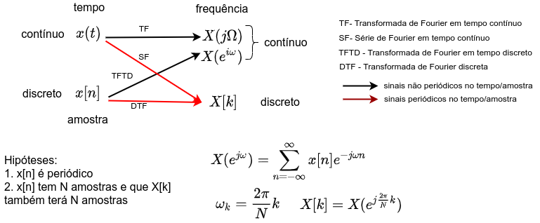
A transformada discreta de Fourier é a transformada de Fourier para uma sequência de comprimento finito.
Corresponde a amostras igualmente espaçadas (\(\omega_k = \frac{2\pi}{N}k\)) na frequência da T.F. de uma sequência.
Notação: DFT (Discrete Time Fourier Transform) ou TDF (Transformada Discreta de Fourier).
Neste caso, substituí-se a função complexa \(e^{jwn}\) por \( e^{j(2\pi/N)k n} \)
Transformada Discreta de Fourier
Considere uma sequência de tamanho finito \(x[n]\), \(n = 0, 1, \dots, N-1\). O par de Transformadas Discretas de Fourier é definido como:
OBSERVAÇÕES:
\(X[k]\): são calculadas em frequências múltiplas de \(\displaystyle \Omega_0 = \frac{2\pi}{N} F_s = \frac{2\pi}{NT}\).
\(X[k]\) é periódica \(\Rightarrow\) O primeiro período é o que interessa.
Cuidado na Interpretação dos resultados
Exemplo 1: Determine a DFT de \(x[n] = \{1,1,1,1,1, 0, 0, 0, 0, 0\}\)
OBSERVAÇÃO:
Para o primeiro período desta sequência a transformada z da sequência anterior é:
\[ X(z) = \frac{1-z^{-5}}{1-z^{-1}} \]No círculo unitário, isto é, fazendo \(z = e^{jw}\) tem-se:
\[ X(e^{jw}) = e^{-j2w}\frac{\sin(5w/2)}{\sin(w/2)} \]Admitindo: \(w_k = 2\pi k/N\), com \(N = 10\), tem-se:
\[ X(w_k) = e^{-j\frac{2\pi}{5}k}\frac{\sin(\pi k/2)}{\sin(\pi k/10)} \]
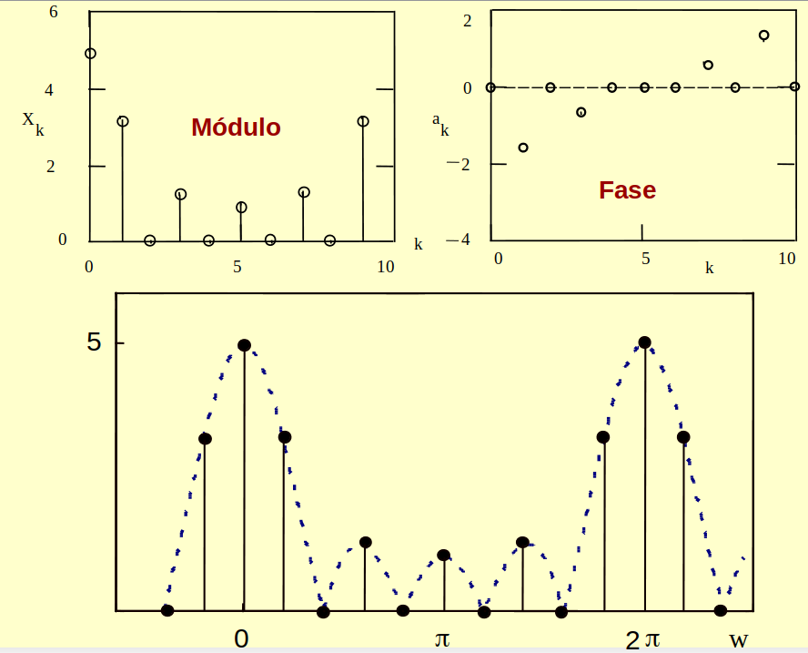
Interpretação da TDF através da Transformada z
A TDF de uma sequência finita \(x[n]\) pode ser interpretada como sendo as amostras regularmente espaçadas da transformada z no círculo unitário.
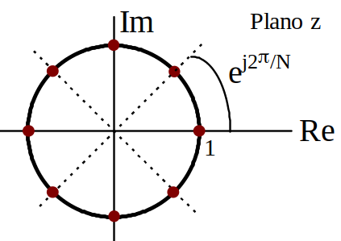
Resolução (http://www.peb.ufrj.br/cursos/cob785/COB785_Conceitos.pdf) é a menor mudança incremental do parâmetro que causa uma variação detectável no valor de saída.
Propriedades da TDF
Idênticas a TF
Teorema de Parseval
É interessante observar que o aumento de \(N\) leva a reduzir potência em cada harmônico \(k\).
Convolução Circular e Linear
Na TDF os sinais, no tempo e na frequência são admitidos periódicos.
Considere duas sequências \(x_1[n]\) e \(x_2[n]\) de comprimento \(N\).
Qual é a sequência \(x_3[n]\) tal que: \(X_3(k) = X_1(k)X_2(k)\) ?
Define-se a convolução circular entre duas sequências de tamanho \(N\):
A quantidade \([n - m]\) é calculada via módulo \(N\).
Exemplo de Convolução Circular
\(n\) |
0 |
1 |
2 |
3 |
4 |
5 |
6 |
7 |
|---|---|---|---|---|---|---|---|---|
\(x_1(n)\) |
0.1 |
0.2 |
0.3 |
0.4 |
0.5 |
0.6 |
0.7 |
0.8 |
\(x_2(n)\) |
0.3 |
0.1 |
0.5 |
0.9 |
0.8 |
0.6 |
0.4 |
0.2 |
Cálculo da convolução Circular
No círculo interno coloca-se, no sentido horário, \(x_2[n-m]\).
No círculo externo coloca-se, no sentido anti-horário, \(x_1[m]\).
As amostras correspondentes ao mesmo raio são multiplicadas e os produtos somados.
Os outros valores da convolução são obtidos rotacionando o círculo interno no sentido horário.
O processo é repetido até que a primeira amostra do círculo interno chegue a sua posição original.
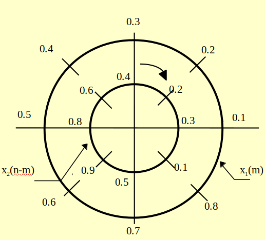
Exemplo: Convolução Circular
Estabelecendo \(N=L\), as TDFs das sequências acima serão:
Multiplicando \(X_1(k)\) por \(X_2(k)\) tem-se:
A TDF inversa da equação acima resultará na convolução circular entre \(x_1[n]\) e \(x_2[n]\), isto é:
Veja figura:
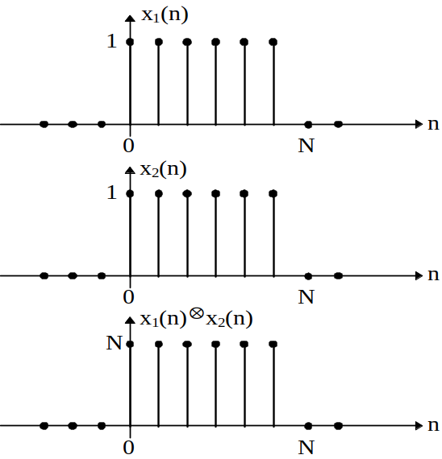
Observe que o resultado acima não é a convolução linear entre \(x_1[n]\) e \(x_2[n]\).
Para a obtenção da convolução linear é necessário acrescentar zeros às sequências, como será visto em seguida.
A Convolução linear entre duas sequências de tamanho \(N\) e \(M\), é uma sequência de tamanho \(N+M-1\).
**Obtenção da Convolução Linear
Primeiramente se forma duas novas sequências de tamanho \(N+M-1\).
Acrescenta-se zeros nas duas sequências para formar duas novas sequências de tamanho \(N+M-1\).
Em seguida faz-se a convolução circular a partir destas duas novas sequências.
No exemplo anterior, acrescenta-se \(N-1\) zeros nas duas sequências, de modo que ambas fiquem com comprimento \(2N-1\) e em seguida faz-se a convolução circular.
Como resultado tem-se a convolução linear entre as duas sequências originais.
**Exemplo: Convolução Linear (Do exemplo anterior)
Constrói-se duas sequências novas de tamanho \(2N\) e faz-se a convolução
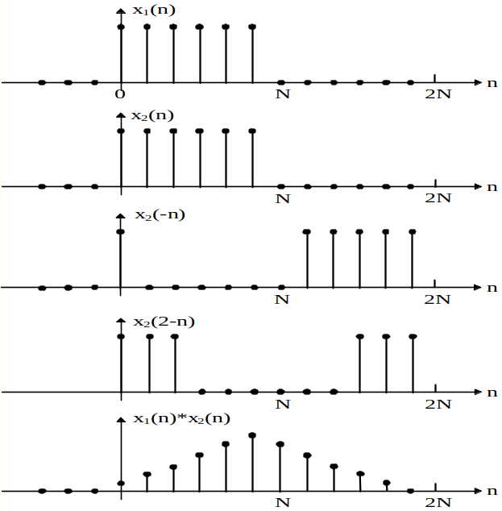
Convolução Linear Utilizando DFT (FFT)
Considere duas sequências de tamanho \(N_1\) e \(N_2\).
Forma-se duas sequências novas de tamanho \(N_1 + N_2 -1\) acrescentando zeros.
Calcula-se a DFT das duas sequências \(X_1(k)\) e \(X_2(k)\).
Calcula-se o produto \(X_3(k) = X_1(k)\cdot X_2(k)\).
Calcula-se a DFT inversa \(x_3[n]\).
\(X_3(k)\) é a convolução linear entre as duas sequências originais.
Como a DFT é calculada através de algoritmos de FFT, o procedimento acima é rápido.
Exemplos de cálculo da TDF no computador
Para um sinal senoidal
Para um sinal composto de dois tons senoidais
Exemplo de Análise Espectral
Amostragem do sinal em Fs \(\to\) em frequência o sinal é periódico em Fs
Sinal em tempo discreto \(\to\) em frequência o sinal é periódico em \(2\pi\)
Resolução: \(\frac{2\pi}{N}\) (tempo discreto) ou \(\frac{Fs}{N}\) (equivalente no tempo contínuo)
%matplotlib inline
import numpy as np
import matplotlib.pyplot as plt
import scipy.fftpack
plt.rcParams['figure.figsize'] = [12, 8]
fig, ax = plt.subplots()
N = 1000
fo, f1 = 16, 18
Fs = 150
T = 1/Fs
Res = Fs/N
print('Resolução: ', Res,' Hz')
t = np.linspace(0.0,(N-1)*T, N)
x = np.sin(fo*2.0*np.pi*t) +np.sin(f1*2.0*np.pi*t)
plt.subplot(211)
plt.plot(t, x)
X = scipy.fftpack.fft(x, N)
f = np.linspace(0.0, Fs, N)
#
plt.subplot(212)
plt.plot(f[:N//2],2/N*np.abs(X[:N//2]))
plt.xlabel('Hz')
# plt.show()
Resolução: 0.15 Hz
/tmp/ipykernel_5395/3137496591.py:24: MatplotlibDeprecationWarning: Auto-removal of overlapping axes is deprecated since 3.6 and will be removed two minor releases later; explicitly call ax.remove() as needed.
plt.subplot(211)
Text(0.5, 0, 'Hz')
OBS: A fft é simétrica em torno de 1+Nfft/2 e Fftx(1) é o componente DC.
Escalamento para a fft não ser função do tamanho do sinal
Mx = Mx/N;
Criação do vetor frequência f para saída gráfica
f = (0:Nfft-1)/Nfft; f = f*fs;
plot (f,Mx);
title('3. - Análise Espectral');
xlabel('freqüência [Hz]'); ylabel('Escalar');
TRANSFORMADA RÁPIDA DE FOURIER - FAST FOURIER TRANSFORM (F.F.T.)
Algoritmo proposto por Cooley e Tukey em 1966
Explora as propriedades de simetria da DFT
Diminui sensivelmente o número de operações realizadas.
Computação da D.F.T. - Algoritmo F.F.T. (Fast Fourier Transform)
Re-escrevendo a equação acima, temos (N par):
Posições pares e ímpares de \(x[n]\)
E finalmente:
Ou seja, \(X(k) = G(k) + W_{N}^{k} H(k)\)
\(G(k)\) é uma DFT de \(N/2\) pontos (pontos pares)
\(H(k)\) é uma DFT de \(N/2\) pontos (pontos impares)
Para \(N = 8\), teremos :
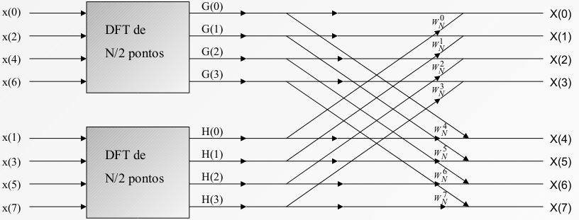
\(G(k)\) e \(H(k)\) tem período \(N/2\). \(G(0) = G(4)\). Multiplicações = \(4(N/2)^2 \cdot2\) e adições = \((N/2)\cdot(2N-2)\cdot2\)
Analogamente, ‘quebrando-se’ \(G(k)\) temos:
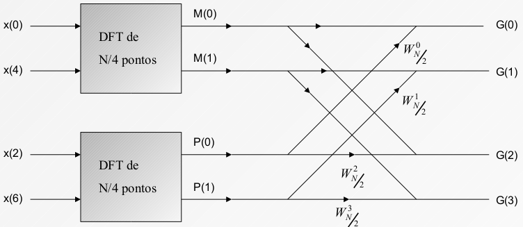
A DFT de \(x[0]\) e \(x[4]\) acima é calculada como:
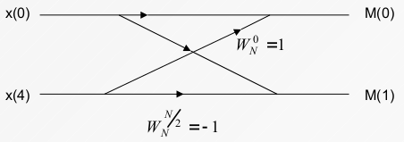
Número de multiplicações complexas \(\Rightarrow\) \(N\log_2N\)
Exemplo com 16 pontos
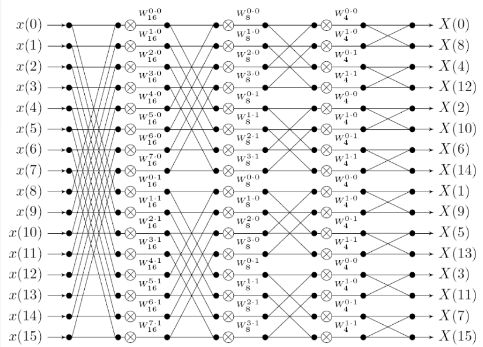
import numpy as np
import matplotlib.pyplot as plt
DTFT = []
FFT = []
I = []
for i in range(1, 1000000, 100):
I.append(i)
DTFT.append(i*i)
FFT.append(i*np.log(i))
plt.yscale('log')
plt.plot(I,DTFT, I, FFT)
plt.grid()
print('Com sinais com comprimento 1.000.000 pontos a FFT fica {} mais rápido que a DTFT'.format(int(DTFT[len(DTFT)-1]/FFT[len(FFT)-1])))
print('Se o tempo de executar a FFT for 1 minuto a DFT vai durar aproximadamente 50 dias')
Com sinais com comprimento 1.000.000 pontos a FFT fica 72375 mais rápido que a DTFT
Se o tempo de executar a FFT for 1 minuto a DFT vai durar aproximadamente 50 dias
Notas:
Zero-padding
N = 100 amostras \(\to\) N’ = 128 = 2^7 incluir 0’s no final das N amostras
N’’= 64 amostras
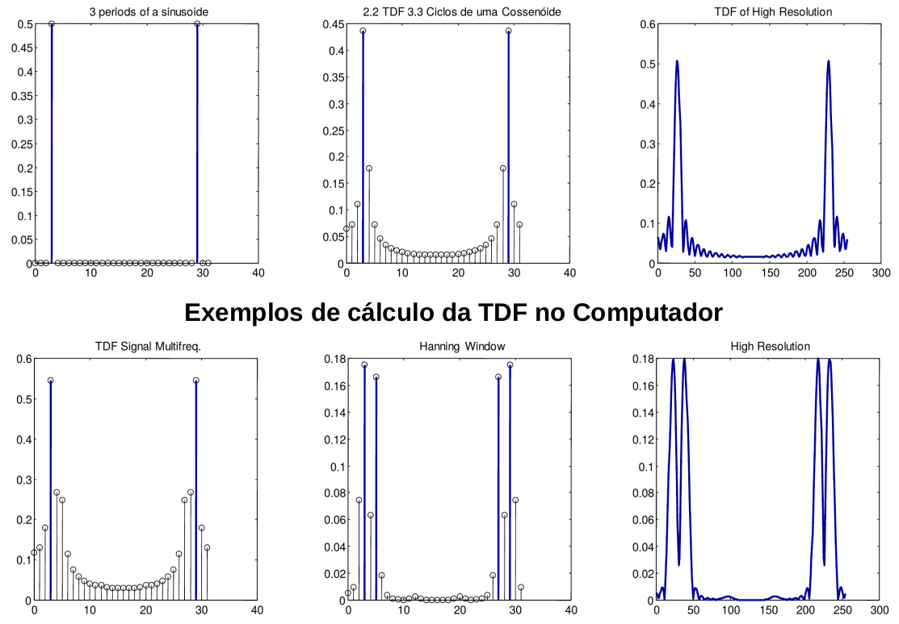